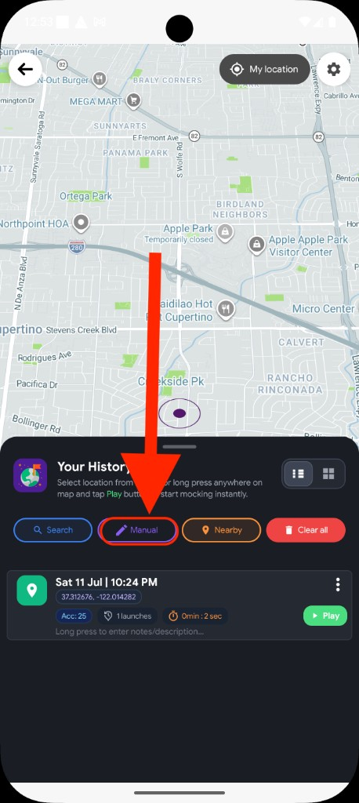
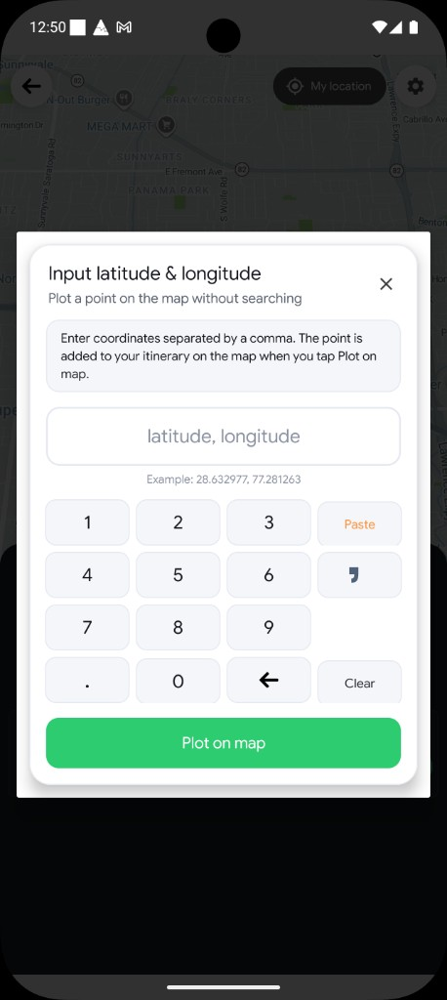
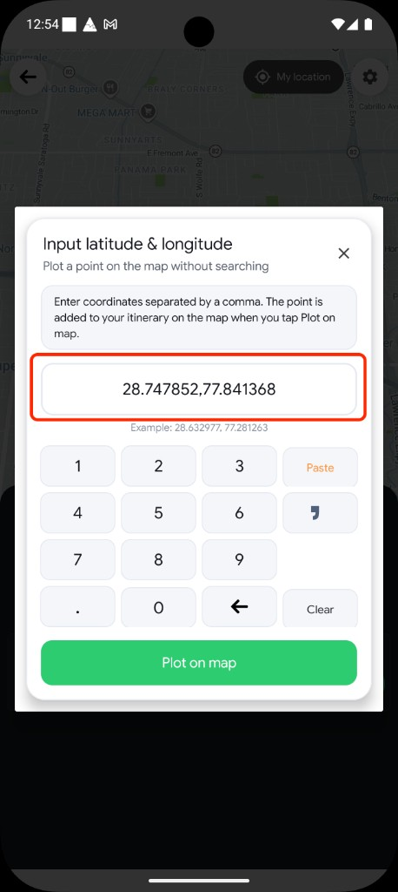
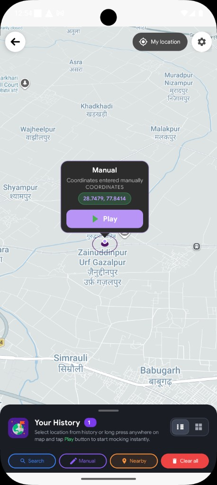

When Manual is the right choice
Manual is for precision. Use it when someone sent you coordinates, you copied them from a spreadsheet or ticket, or you need a point that is hard to find by name on the map.
-
Exact spot
Drop a pin at a known
lat, lngwithout searching or browsing categories. -
On-screen keypad
Digits, decimal, comma, backspace, and Clear — built for coordinate entry.
-
Plot, then Play
Plot on map places the pin. Tap Play on the callout when ready.
Quick comparison: Use Manual for raw coordinates. Use Search for names and addresses. Use Nearby to browse categories around a pin. Use a long press when you can see the place on the map.
Before you begin
Checklist
- Mock Loc set up as your mock location app. Setup guide →
- Coordinates ready — latitude and longitude separated by a comma.
- No mock already running — stop any active stationary session first; Manual is ignored while playback is active.
How Manual input works
From opening the Manual chip to tapping Play on your plotted pin — follow each step below. Screenshots sit beside the instructions and alternate sides as you scroll.

Open Stationary Pointer
From the Mock Loc home screen, open Stationary Pointer. In the bottom tray action row, tap Manual to start entering coordinates.

Open the coordinate dialog
A dialog titled Input latitude & longitude appears, with the subtitle Plot a point on the map without searching. The hint shows latitude, longitude and the on-screen keypad is ready below.

Enter coordinates with the keypad
Type latitude, a comma, then longitude — for example
28.632977, 77.281263. Use the decimal key for fractions, backspace to
fix a digit, or Clear to start over. Tap X to
cancel without changes.
Tap Plot on map
When the pair looks right, tap Plot on map. The dialog closes, the map pans to those coordinates, and a marker appears at the exact spot you entered.

Tap Play on the floating pin
A map callout labeled Manual shows Coordinates entered manually, the values you typed, and a Play button. Tap Play to start mocking — the point is saved to history when playback begins.
Every control in the dialog
Here is what each part of Input latitude & longitude does:
Close
Dismiss without changing the map
Coordinate field
Shows what you typed — lat, lng
Digits
Append numbers to the field
Decimal
Adds a decimal in the current number
Comma
Separates latitude from longitude
Backspace
Deletes the last character
Clear
Erase everything and start again
Plot on map
Validate, close, and place the pin
After Plot on map
No Mock bottom sheet here — tap Play on the floating pin to start. History saves when mocking begins.
Coordinate format
Use this pattern
- Write latitude first, then a comma, then longitude.
- Example shown in the app:
28.632977, 77.281263 - Only one comma between the two numbers.
- Each number may include at most one decimal point.
Quick tips
Enter coordinates cleanly
- Double-check the order — latitude comes before longitude.
- Use Clear if the field gets messy instead of fighting backspace.
- Pick a different spot than where you stand — mocking your exact real GPS may be blocked.
- Stop other mocks first — Manual will not open while stationary playback is already running.
Troubleshooting
Manual does nothing when I tap it
Stop any active stationary mock first. The Manual chip is ignored while a player session is already running.
“Please Enter correct lat-long”
Make sure you included a comma between latitude and longitude, and that both sides have a number. Empty input will also be rejected.
Pin appears but mocking does not start
After Plot on map, you still need to tap Play on the floating Manual pin. Plotting alone only places the marker.
Other apps still show my real location
Confirm Mock Loc is selected under Developer options → Select mock location app, and that the player shows an active session. Force-close the other app and reopen it after Play.